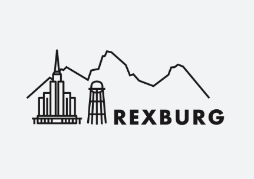
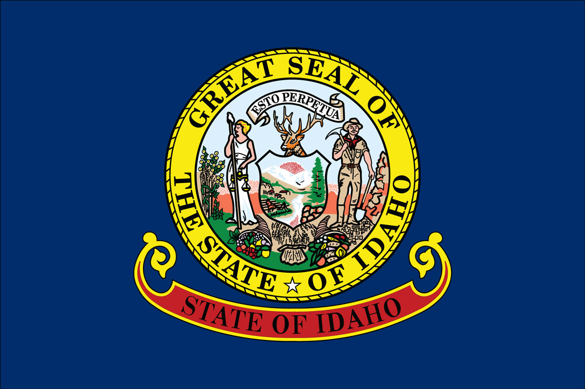
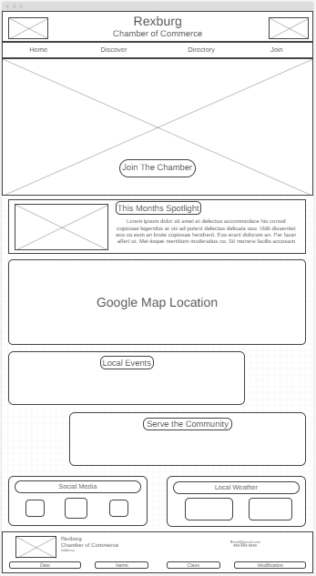
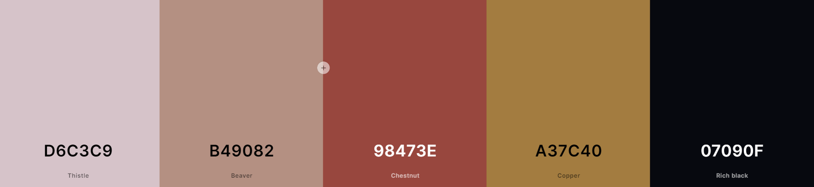

Logo / Favicon and State Flag
 Home Page Wireframe
On the home page of the site, the user will be welcomed with a hero image of rexburg. The Two main purposes for the site are to provide a community for local businesses and to promote and protect the interests of it's members
Color Palette
The color palette was chosen with coolors.com. Righ black is used for the header and footer, thistle is used for the hover, and copper for the background of the page. Chestnut will be used as accents for the site.
Fonts
Chosen Font for the entire site is Golos Text from Google Fonts
Site Purpose
The purpose of this site is to provide the community with a place to find local events, learn about the community, support local businesses, and apply for a membership. The memberships allow for local businesses to have a exposure and support from the community and the different tiers of membership dictate how much exposure is received.
Scenarios
A user coming to the site may be looking for answers to local events, looking for how to buy a membership, how to gain exposure to their business, learn more about rexburg, look for places to visit, learn about the population / current demographic of rexburg, or contact the chamber. All of these questions can be answered with the site.